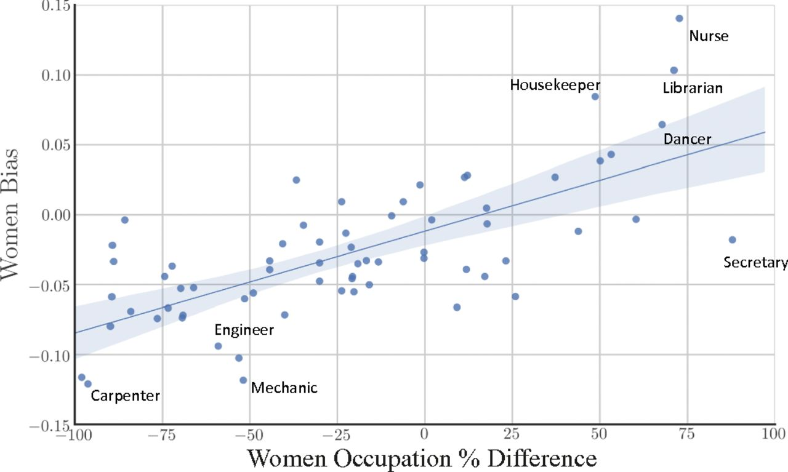
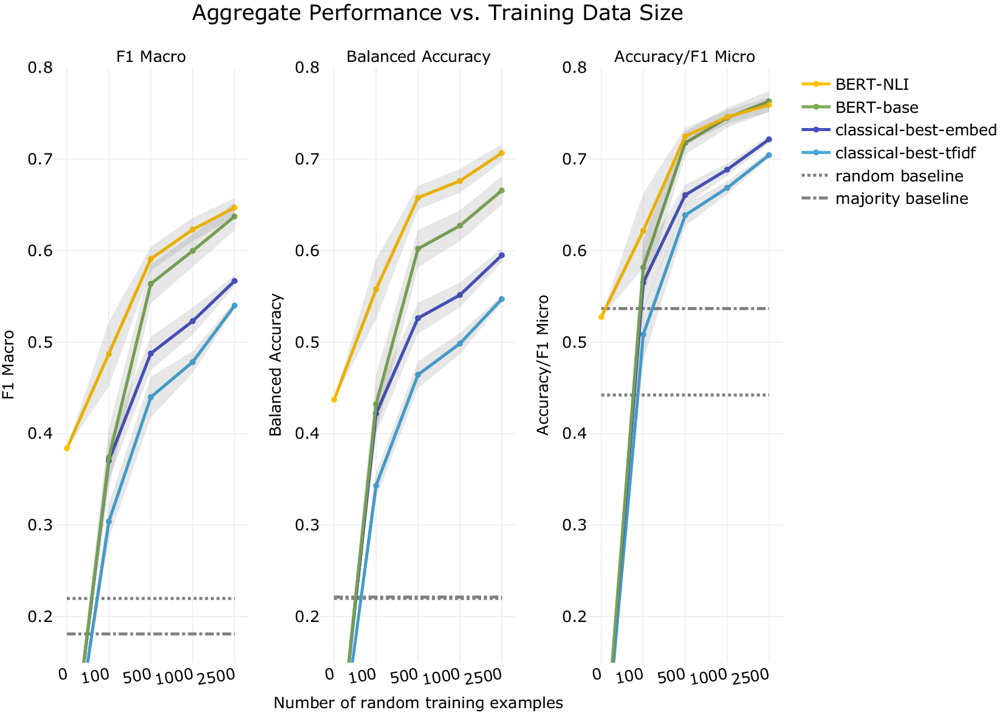

ガイダンス
Contents
ガイダンス#
自然言語処理#
自然言語処理（NLP: Natural Language Processing）は、人間が日常的に使っている自然言語をコンピュータに処理させる一連の技術であり、人工知能（AI）の研究分野で中核を成す要素技術の一つといえます。
私たちは普段、自分たちの言語の複雑さについて考えることはありません。人間にとっては、言語は歩くのと同じように、訓練された反復可能な行動であるため、習得しやすく、青年期にはより自然に使用できるようになると言われています。ただ、人間にとって自然なことでも、大量の非構造化データを処理し、正式なルールがないばかりか、現実世界のコンテキストや意図もないコンピューターにとっては、それを成すことは非常に困難です。
近年、自然言語処理技術の急速な進歩に驚きの声が上がっていました。
実際、自然言語処理において昨今の支配的な手法は、隠れマルコフモデル(HMM)、線型サポートベクトルマシン(SVM)やロジスティック回帰など統計的機械学習(statistical machine learning)に基づいていました。
2014年頃、この分野において、非線型ニューラルネットワークが導入され、多くのタスクにより高い性能を達成できました。さらに、これに基づいて、より先進的なモデリング方法の開発も進めました。特に、再帰的ニューラルネットワーク(RNN)に基づく方法は言語の時系列性質も学習できるになって、様々なタスクにおいて精度向上に大きく貢献しました。
2018年にGoogleが発表したBERTというモデルでは、大規模なテキストで一般的な言語パターンや文脈を学習します。その後、この事前学習済みモデルを特定のNLPタスクにファインチューニングすることで、少ないラベル付きデータで高性能を発揮することができます。
それだけでも驚きでしたが、一般人の中でも話題になる「ChatGPT」をはじめとする生成AIの大規模な言語モデル(LLM:Large Language Model)の進展により、質問への回答、文章の要約や翻訳、ソフトウエアのプログラミングなど、言語に関わるさまざまなタスクができるようになりました。
高機能化のカギは、深層学習技術の発展があります。深層学習を用いた自然言語処理には、あらかじめ用意した膨大な文章を使って、「言語モデル」と呼ばれるシステムを学習させる方法があります。 言語モデルの実体は簡単な計算式を大量に組み合わせた超巨大な数式といえます。最先端の言語モデルでは、想像を絶するほど大量の文章を使い、パラメータ（数式の係数）が数千億に達するほどの大規模な言語モデルを学習させて使っています。LLMが人間に匹敵するほどの高度な能力を持つ、文章の作成や会話を利用するさまざまな仕事を、コンピュータに任せることが可能になってきました。
計算社会科学において自然言語処理の応用#
人間の社会行動に関するデジタル化された高密度・大容量のデータの蓄積を背景に、近年、計算社会科学と呼ばれる新たな学問領域が勃興し、急速な発展を遂げています。
計算社会科学において，テキストデータの収集・分析は広く用いられている研究手法です。ここで、自然言語処理技術の発展が計算社会科学にす新たな可能性をもたらせます。
本講義の目的は、計算社会科学に多く応用された自然言語処理技術を理解し、実問題に適用するための基礎力を身につけることです。
その目的を達成するために、自然言語処理と深層学習の基礎、重要な概念と主な手法(モデル)を学習する。さらに、Python用いて、自然言語処理によく用いられるライブラリとツールを学習しつつ、自然言語処理技術を応用するスキルを修得する。
単語分散表現#
単語分散表現とは、「文字・単語をベクトル空間に埋め込み、その空間上のひとつの点として捉える」ことを指します。
類似性: ある概念を表現する際に、ほかの概念との共通点や類似性と紐づけながら、ベクトル空間上に表現します。
単語類推: 分散表現では異なる概念を表現するベクトル同士での計算が可能です

1910年代からのテキストデータで単語分散表現を学習し、単語分散表現で男性と女性はそれぞれどのような単語と関連していることを検証することで、ジェンダーのステレオタイプの実態と変化を定量的に分析する [Garg et al., 2018]

単語分散表現の類似性と単語類推特性で、単語分散表現の計算を通じて、文化概念の潜在的意味と関係を定量的に測定できました[Kozlowski et al., 2019]

テキスト分類#
キスト分類とは、事前定義済みカテゴリまたはラベルを非構造化テキスト形式に割り当てる処理のことです。主な使用例として、感情分析、偽情報の検出や内容判定などが挙げられます。
言語は本質的に曖昧で、変化し続け、適切に定義されていないため、テキスト分類は決して簡単なタスクではないが、深層学習による自然言語処理が発展したことにより、高精度化させることが可能になってきています。
とくに2018年に発表されたBERT [Devlin et al., 2019] はセンチメント分析を含めた多くのタスクに関して、当時の最高性能(SOTA: State of the Art)を達成する画期的な技術でした。
BERTは事前学習モデルの一種で、事前に一定のタスクに基づいて事前学習することで汎用性を獲得することに特徴があります。そのため、特定のタスクについてより少ないデータで性能を発揮することができます。
BERTのような事前学習モデルによるテキスト分類の社会科学における応用可能性について多くの注目を集めています [Laurer et al., 2023]。

講義の構成#
イントロダクション
基礎知識 💻 🔣
自然言語処理の基本概念
機械学習の基本概念
深層学習による自然言語処理ための数学の復習
ニューラルネットワーク 💻 🔣
ニューラルネットワークの構造
ニューラルネットワークの学習
誤差逆伝播法
PyTorch 💻
単語埋め込みモデル(Word Embedding) 💻 🔣
単語埋め込みアルゴリズム
単語埋め込みモデルの性質
単語埋め込み獲得：カウントベース手法
word2vecの原理 🔣
CBOW
Skip-gram
Negative Sampling
word2vecの実装 💻
gensimによるword2vecモデルの学習
既存word2vecモデルの利用
word2vecが人文・社会科学研究における応用 📄
シーケンスモデリング(1) 💻 🔣
RNN
LSTM
シーケンスモデリング(2) 💻 🔣
seq2seq
Transformer(1) 💻 🔣
Attentionモデル
Transformer(2) 💻 🔣
Self-attention
Transformerの構成要素
BERTによるテキスト分類の実装(1) 💻
事前学習済みモデルと転移学習
HuggingFace
GPUの設定
BERTによるテキスト分類の実装(2) 💻
大規模言語モデル 📄
💻 : プログラミング作業が含む講義、PythonとJupyterの基本の使い方を把握することが前提となります
🔣 : 数学に関わる解説が含む講義、基本的な微積分と線形代数の知識が前提となります
📄 : 英語論文を読む必要がある講義
到達目標#
自然言語処理と深層学習の基礎概念について学ぶとともに、自然言語処理手法を実装する能力を習得する
自然言語処理を用いる研究論文を理解できるようになることを目指す
授業設計と成績評価#
プログラミング操作が含む講義では、必ずPCをご持参する上で、Python環境を整備してください。また、インターネットとの接続が必要される操作もありますので、PCのインターネット接続も事前に設定してください。
授業後課題提出を求める場合があります。基本的には授業の理解度を確認するためのプログラミング課題と想定しています。
最終レポートは、自然言語処理技術を用いる分析に関する内容が想定されています。
成績評価の分配は以下の通りです
出席: \(30\%\)
授業後の課題: \(30\%\)
最終レポート: \(40\%\)
授業の内容に関して不明点あるいはご要望があれば、随時メールでご連絡ください。また、プログラミングやソフトウェア操作の質問については、Google ClassroomまたはGitHub Issueでも受け付けます。
授業のオフィスアワーは、できれば二日前アポイントを取ってくだい。
参考文献#
- DCLT19
Jacob Devlin, Ming-Wei Chang, Kenton Lee, and Kristina Toutanova. \BERT\: Pre-training of Deep Bidirectional Transformers for Language Understanding. In Proceedings of the 2019 Conference of the North \A\merican Chapter of the Association for Computational Linguistics: Human Language Technologies, Volume 1 (Long and Short Papers), Proceedings of the 2019 Conference of the North, 4171–4186. Minneapolis, Minnesota, 2019. Association for Computational Linguistics. URL: https://www.aclweb.org/anthology/N19-1423, doi:10.18653/v1/n19-1423.
- GSJZ18
Nikhil Garg, Londa Schiebinger, Dan Jurafsky, and James Zou. Word embeddings quantify 100 years of gender and ethnic stereotypes. Proceedings of the National Academy of Sciences, 115(16):E3635–E3644, 2018. URL: https://www.pnas.org/doi/abs/10.1073/pnas.1720347115, arXiv:https://www.pnas.org/doi/pdf/10.1073/pnas.1720347115, doi:10.1073/pnas.1720347115.
- GBPF22
Gabriel Grand, Idan Asher Blank, Francisco Pereira, and Evelina Fedorenko. Semantic projection recovers rich human knowledge of multiple object features from word embeddings. Nature Human Behaviour, 6(7):975–987, 2022. doi:10.1038/s41562-022-01316-8.
- KTE19
Austin C. Kozlowski, Matt Taddy, and James A. Evans. The geometry of culture: analyzing the meanings of class through word embeddings. American Sociological Review, 84(5):905–949, 2019. doi:10.1177/0003122419877135.
- LvACW23
Moritz Laurer, Wouter van Atteveldt, Andreu Casas, and Kasper Welbers. Less annotating, more classifying: addressing the data scarcity issue of supervised machine learning with deep transfer learning and bert-nli. Political Analysis, pages 1–17, 2023. doi:10.1017/pan.2023.20.
- MSC+13
Tomas Mikolov, Ilya Sutskever, Kai Chen, Greg S Corrado, and Jeff Dean. Distributed representations of words and phrases and their compositionality. In C.J. Burges, L. Bottou, M. Welling, Z. Ghahramani, and K.Q. Weinberger, editors, Advances in Neural Information Processing Systems, volume 26. Curran Associates, Inc., 2013. URL: https://proceedings.neurips.cc/paper_files/paper/2013/file/9aa42b31882ec039965f3c4923ce901b-Paper.pdf.
- MYZ13
Tomas Mikolov, Wen-tau Yih, and Geoffrey Zweig. Linguistic regularities in continuous space word representations. In Lucy Vanderwende, Hal Daumé III, and Katrin Kirchhoff, editors, Proceedings of the 2013 Conference of the North American Chapter of the Association for Computational Linguistics: Human Language Technologies, 746–751. Atlanta, Georgia, June 2013. Association for Computational Linguistics. URL: https://aclanthology.org/N13-1090.